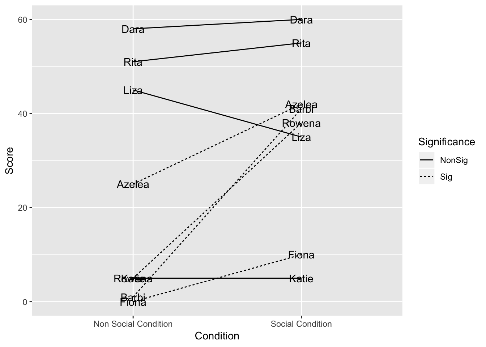
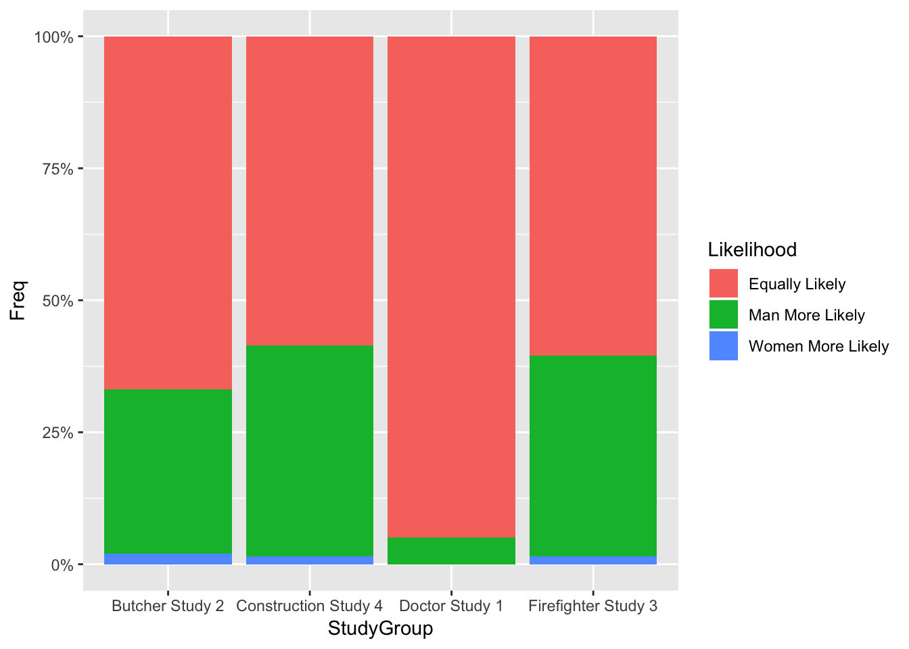
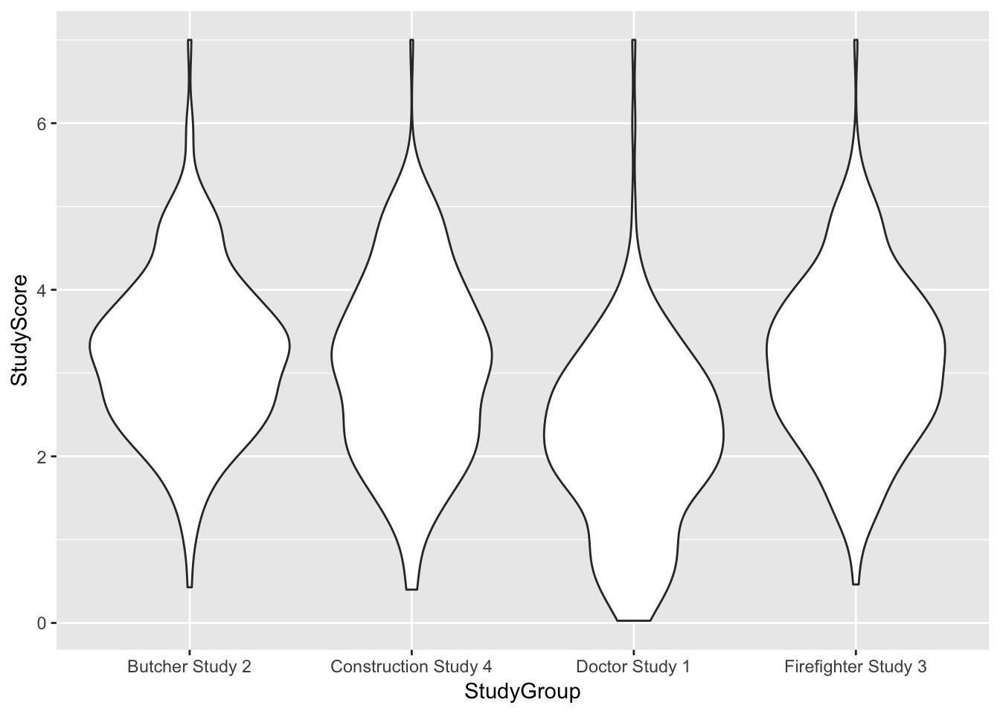

library(ggplot2)
Dara <- c(58, 60)
Rita <- c(51, 65)
Liza <- c(45, 35)
Katie <- c(5, 5)
Azelea <- c(25, 42)
Barbi <- c(1,41)
Rowena <- c(5, 38)
Fiona <- c(0, 10)
Chimpanzee <- rep(c("Dara", "Rita", "Liza", "Katie", "Azelea", "Barbi", "Rowena", "Fiona"), each = 2)
Condition <- rep(c("Non Social Condition", "Social Condition"), 8)
Score <- c(58, 60, 51, 55, 45, 35, 5, 5, 25, 42, 1, 41, 5, 38, 0, 10)
Significance <- rep(c("NonSig", "Sig"), each = 8)
CalcuttEtAl2019 <- data.frame(Chimpanzee, Condition, Score, Significance)
ggplot(CalcuttEtAl2019, aes(Condition, Score, group = Chimpanzee, linetype= Significance))+
geom_line()+
geom_text(label = Chimpanzee)
library(ggplot2)
library(scales)
StudyScore <-c(c(abs(rnorm(192, 2.1, 1)), rep(c(1:7))), # Values for Doctor
c(abs(rnorm(198, 3.3, 1)), 7), # Values for Butcher
c(abs(rnorm(195, 3.1, 1)), 4.5, 4.5, 4.8, 4.7, 7), #Values for Firefighter
c(abs(rnorm(200, 3.1, 1)), 4.5, 4.8, 4.8, 4.7, 7)) #Values for Construction Worker
StudyGroup<- c(rep("Doctor Study 1", 199), #Levels for Doctor
rep("Butcher Study 2", 199), #Levels for Butcher
rep("Firefighter Study 3", 200), #Levels for Firefigher
rep("Construction Study 4", 205)) #Levels for Construction Worker
Likelihood <- c(rep(c("Women More Likely", "Equally Likely", "Man More Likely"), c(0, 189, 10)), #Create frequency of Likelihood for Doctor
rep(c("Women More Likely", "Equally Likely", "Man More Likely"), c(4, 133, 62)), #Create frequency of Likelihood for Butcher
rep(c("Women More Likely", "Equally Likely", "Man More Likely"), c(3, 121, 76)), #Create frequency of Likelihood for Firefigher
rep(c("Women More Likely", "Equally Likely", "Man More Likely"), c(3, 120, 82))) #Create frequency of Likelihood for Construction Worker
Cao2019EtAl <- data.frame(Likelihood, StudyGroup, StudyScore) #Create dataset
Cao2019EtAltable <- data.frame(table(Likelihood, StudyGroup)) #Create table for frequency table
ggplot(Cao2019EtAltable ,aes(x = StudyGroup, y = Freq ,fill = Likelihood)) + # Grouped bar plot
geom_bar(position = "fill",stat = "identity") +
scale_y_continuous(labels = percent_format())
ggplot(Cao2019EtAl, aes(StudyGroup, StudyScore)) + geom_violin()